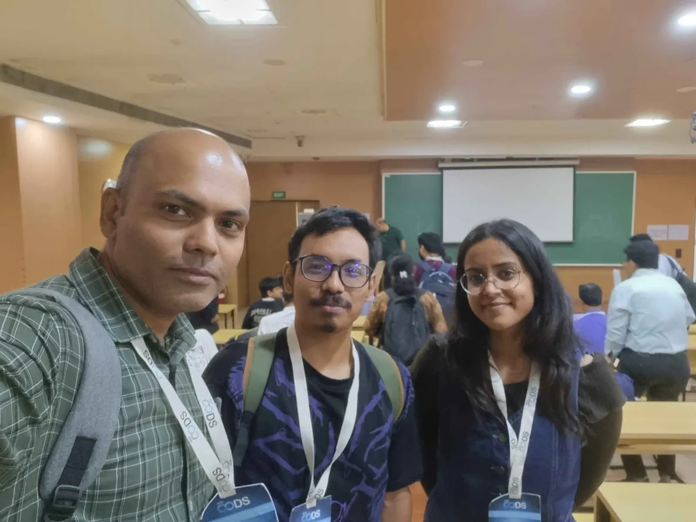
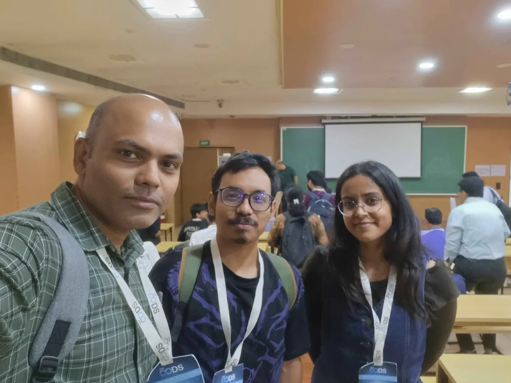

CODS 2025: International Conference on Data Science
TCS 2025: Theoretical Chemistry Symposiums
Presented poster on "Enhancing NMR Shielding Predictions of Atoms-in-Molecules Machine Learning Models with Neighborhood-Informed Representations".

TACC 2025: TIFR Annual Chemistry Conference
Presented poster on "Enhancing NMR Shielding Predictions of Atoms-in-Molecules Machine Learning Models with Neighborhood-Informed Representations".

TIFR Hyderabad In-House Symposium 2025
Presented poster on "Enhancing NMR Shielding Predictions of Atoms-in-Molecules Machine Learning Models with Neighborhood-Informed Representations".
AIBiophysics 2025:
Presented poster on "Many-Body Discrete and Continuous Representations for Atoms-in-Molecules Machine Learning Inspired by Many-Body Interaction".
ML4Science 2025: Machine Learning for Science
Presented poster on "Discrete and Continuous Representations for Atoms-in-Molecules Machine Learning Inspired by Many-Body Interaction".
ChemSci 2024: Leaders in the field symposium
Presented poster on "Discrete and Continuous Representations for Atoms-in-Molecules Machine Learning: Pros and Cons".